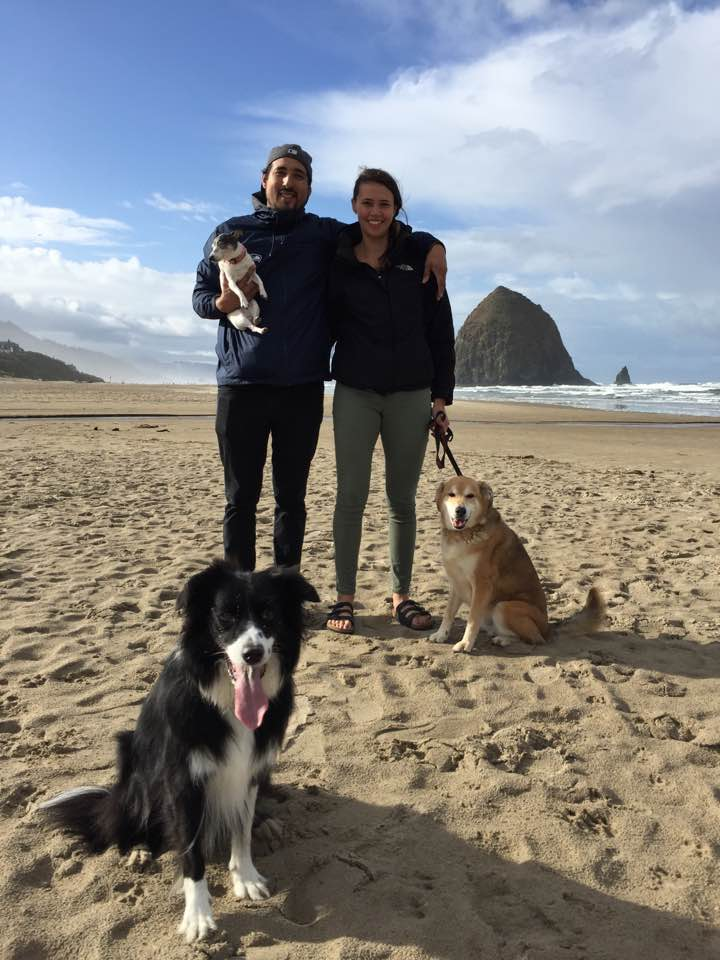
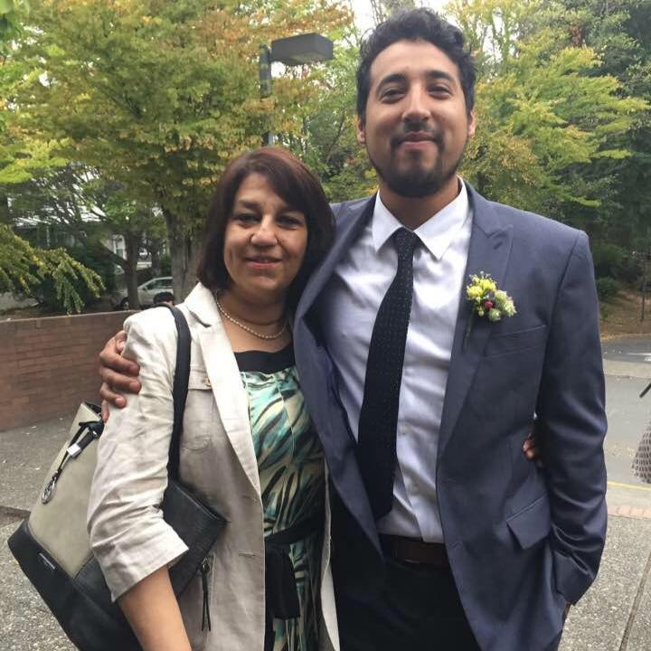

Sebastian Quintana SCC WEB120 Portal
Welcome
 Hello my name is Sebastian Quintana and i'm in the web devolpment program, this is my 3rd Quater in Seattle Central and i'm very excited about this class because one of my goal in this program is be in the future a front end devolpment with an ability to understand more than one language also learn a backend language too
I'm original from Valparaiso,Chile and i moved 11 years ago to this beatiful country and city , back when i was in Chile i studied engineer in stadistic and back them i took programming classes using a very old language call Pascal. I didn't finished school because after 2 years and half i moved to here and here we are.
Also i been married almost 3 years and very happy to have a partner and we really like to travel so we are now focus to finished my school and my wife is a sous chef at Matt's in the market so always is good to go to adventures and try new food and experiences.
Just now we came back from Hong Kong and Vietnam and before we were in Chile and Argentina , 2019 was amzing and start also classes here